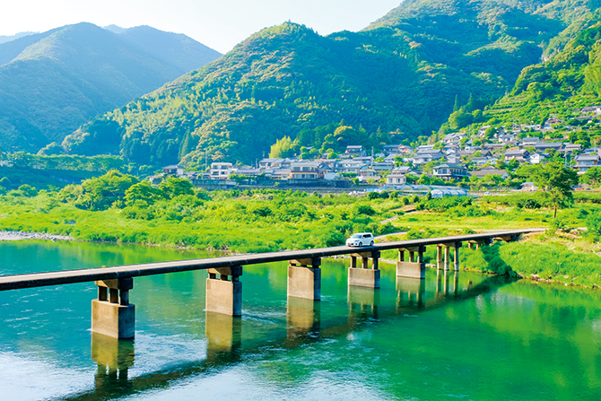
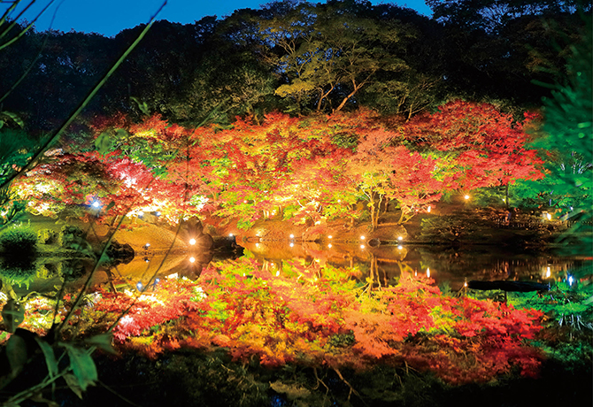
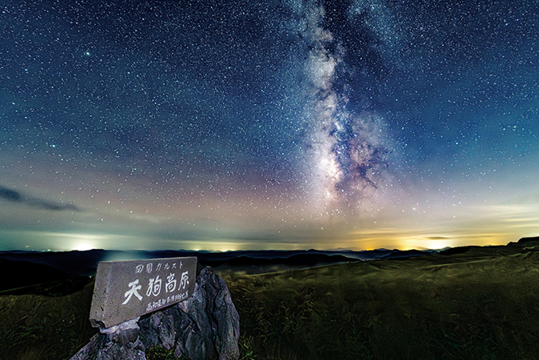
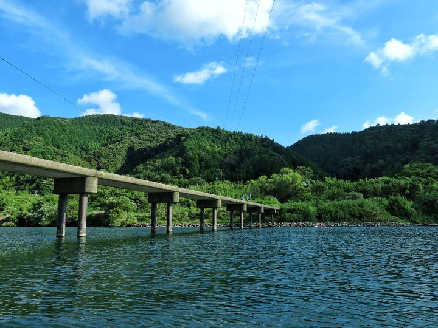

ドライブ日和





今年のドライブナビ
通行止め情報
【愛媛】石鎚スカイラインは冬季（11月下旬～4月中旬頃）は積雪のため通行止め
夜間（日没～日の出）は常時通行止めで、落石防止のため異常気象時（大雨など）も通行止です。
季節ごとの注意点
- 春：花粉や急な天候変化に注意し、オープンエアを楽しむ。
- 夏：熱中症対策と、突然の夕立に備えた準備を。
- 秋：路面の落ち葉や霧に注意。日が落ちるのが早いため早めの帰宅を推奨。
- 冬：凍結路面や積雪に注意。必ずスタッドレスタイヤなどの準備を。